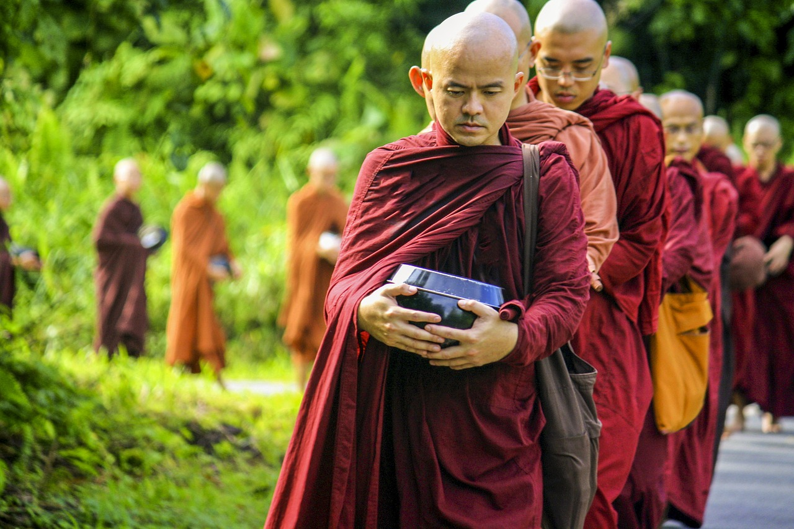

處世間，如虛空
濟群法師
出家人的生活，一方面是通過戒律來規範自身行為；一方面是保持少欲知足的生活狀態。出家生活是簡單的，生活環境簡單，內心也容易獲得平靜。若是環境太複雜，幻想自然隨之增多。慾望特別大的人，必然要為了 滿足慾望不斷操勞，不斷消耗自己的時間、精力、心力。現代人雖然生活好了，但普遍活得很累，時刻都在掙錢和消費的循環中奔忙，幾乎沒有片刻閒暇。
相比之下，出家人確實太有福報了。我們不必為生存奔波，我們的生活是為真理而求索，為悟道而修行。也正因為如此，生活方式要盡可能簡單，既能減少內心貪著，也是珍惜現有福報。在早期僧團中，佛陀規定比丘們奉行極為簡樸的生活准則，樹下坐，常乞食，雲遊四方，一瓶一鉢，身無長物。中國古代禪僧的生活也同樣淡泊超然，「一鉢千家飯，孤僧萬里游」，正是這種了無牽掛的修道生活的真實寫照。他們的物質生活雖然匱乏，內心卻充實自在。
生活在現代的出家人，物質生活雖然比以前豐富了，修道環境卻非常嚴峻。現代人修行確實比古人要難，因為外在的誘惑太多了。修行需要有相對清淨的環境，尤其在尚未具備相應定力之前，環境是否清淨如法，更顯得重要。
過去，寺院的一堵圍牆就將我們和紅塵隔開了。但現在，報刊、 電視、網絡早已突破了圍牆的阻隔。即使我們身處圍牆之內，仍可能受到外界干擾。所以，我們除了持戒之外，還必須培養自身的定力，否則很難抵擋種種誘惑。
除例行的早晚功課之外，我們應該每天安排一定的禪修時間。打坐能幫助我們將心安住於正念，培養生命內在的自主力量。當這種力量強大之後，我們才有能力抵擋外在環境。否則的話，很難在五欲六塵中保持初心不退。即使能夠堅持，也往往堅持得非常艱難。而有了定力之後，內心自然就能安住。此外，我們還要具足透視世間的智慧。
學習教理，便是幫助我們獲得正確看待世間和人生的智慧。若看不清世界的真相，看不清生命的 奧秘，看不清自身心念的幻化無常，我們和世人的認識又有什麼差別？可以說，我們就沒有在佛法中真正受益。
對於出家人來說，外在威儀和內在心行的培養都是不可或缺的，這是造就僧格的兩大要素。其中，通過修定開發智慧更為重要。若能以佛法智慧俯視世間，我們才能真正保有超然物外的自在，才能救濟群迷而不為塵勞所染。